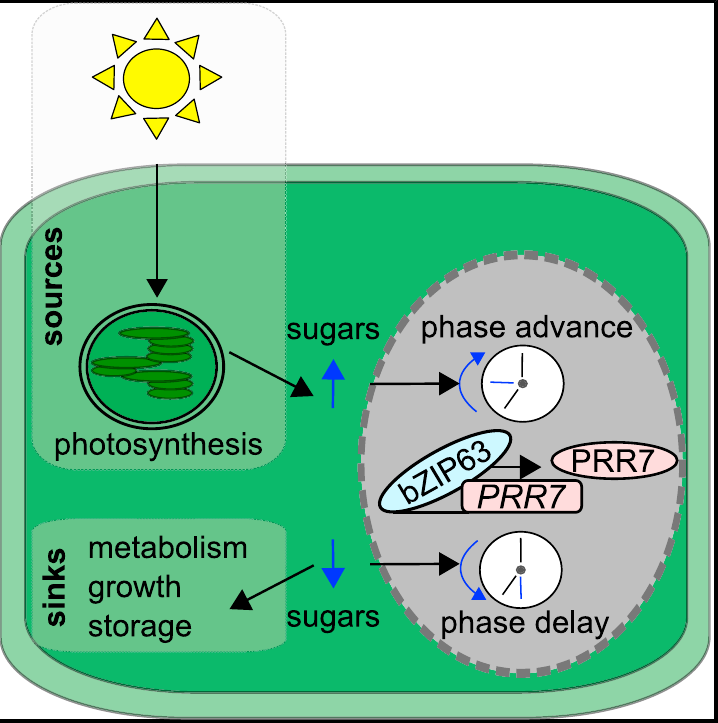

Circadian entrainment by sugars
This study showed that bZIP63 also controls a clock gene called PRR7 — so sugar levels in the plant can nudge its internal circadian clock earlier or later, through a short chain of energy-sensing signals (a sugar-derived molecule called Tre6P, an energy-sensing enzyme called SnRK1/KIN10, and bZIP63 itself).
Frank A, Matiolli CC†, et al. Circadian Entrainment in Arabidopsis by the Sugar-Responsive Transcription Factor bZIP63. Current Biology 28, 2597–2606.e6 (2018). DOI: 10.1016/j.cub.2018.05.092.
Open article →